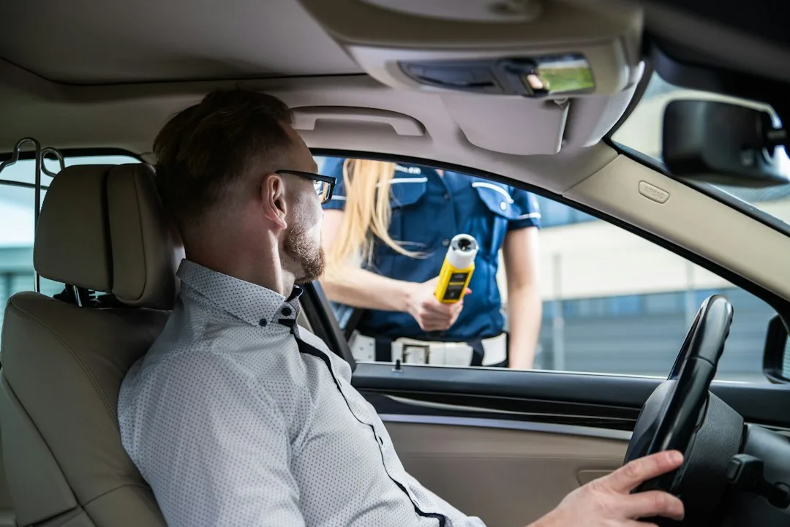
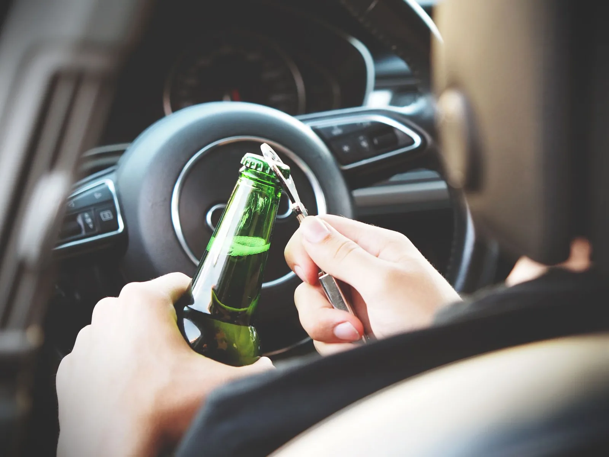

Embriaguez ao Volante: Pena, Fiança e o que Fazer
Um caso de embriaguez ao volante costuma começar de um jeito banal: sexta à noite, blitz no caminho de casa, o agente pede o bafômetro e o visor mostra um número que ninguém esperava. Em poucos minutos a pessoa sai do carro e entra na viatura como autuada. A família recebe a ligação de madrugada e não sabe por onde começar.
A primeira dúvida quase sempre é a mesma: isso é só multa ou é crime? A resposta depende do que foi medido e do que foi registrado na abordagem. A diferença pesa: a multa corre no Detran e o crime corre no fórum, com pena de detenção e registro de antecedentes.
Este guia explica o crime de embriaguez ao volante previsto no Código de Trânsito, a pena fixada em lei e quando cabe fiança. Trata também da recusa ao bafômetro, dos caminhos que o processo pode seguir e do que fazer nas primeiras horas e nas semanas seguintes. O passo a passo da delegacia e da audiência de custódia está em guias próprios.
Quando a embriaguez ao volante vira crime
O Código de Trânsito Brasileiro trata o mesmo comportamento de duas formas. Dirigir sob influência de álcool é sempre infração administrativa. Em alguns casos, porém, a mesma conduta também é crime, previsto no art. 306.
Na Grande Florianópolis, a Lei Seca costuma montar barreiras em pontos de grande fluxo, como a Via Expressa (BR-282), a SC-401 e a Beira-Mar Norte. Na temporada de verão, com mais carros, festas e turistas, a fiscalização se intensifica. Muita gente de fora é abordada sem saber que o processo vai correr em Santa Catarina.
O crime é conduzir veículo automotor com a capacidade psicomotora alterada pelo álcool ou por outra substância psicoativa. Capacidade psicomotora é o conjunto de reflexos, coordenação e atenção usados para dirigir. A lei admite duas formas de constatar essa alteração.
A primeira é numérica. Configura o crime a concentração igual ou superior a 6 decigramas de álcool por litro de sangue. No bafômetro, o limite equivalente é de 0,3 miligrama por litro de ar alveolar, o ar que sai do fundo dos pulmões.
A segunda forma dispensa número. A alteração pode ser provada por sinais, como fala arrastada, olhos vermelhos, odor de álcool, desequilíbrio e desorientação. O Conselho Nacional de Trânsito (Contran) disciplina quais sinais valem e como devem ser registrados.
Essa redação veio da Lei 12.760/2012, que endureceu a primeira versão da Lei Seca, a Lei 11.705/2008. Hoje, o próprio art. 306 admite exame clínico, perícia, vídeo, prova testemunhal e outros meios de prova.
O que diz a Resolução Contran 432/2013
A Resolução 432/2013 do Contran detalha os procedimentos da fiscalização. Para a defesa, o ponto mais relevante dela é a margem de erro do etilômetro.
Nenhum aparelho mede com precisão absoluta. Por isso, a resolução manda descontar o erro máximo admitido do valor exibido no visor. Na prática, o crime fica configurado com medição igual ou superior a 0,34 mg/L no visor, o que equivale a 0,30 mg/L depois de descontado o erro. Já a infração administrativa vale a partir de 0,05 mg/L medido. Leituras na faixa de fronteira merecem conferência atenta, assim como a aferição do equipamento pelo Inmetro.

A mesma resolução traz o termo de constatação de sinais de alteração da capacidade psicomotora. É o formulário que o agente preenche quando o caso não depende do bafômetro. Um termo vago, sem descrição concreta do que foi observado, costuma ser ponto de discussão no processo.
Infração administrativa, crime e recusa: a diferença na prática
Estas são as três situações que mais aparecem nas blitze:
| Situação | Base legal | Natureza | Consequências previstas |
|---|---|---|---|
| Dirigir sob influência de álcool | Art. 165 do CTB | Infração gravíssima (administrativa) | Multa multiplicada por 10, suspensão do direito de dirigir por 12 meses, recolhimento do documento e retenção do veículo |
| Dirigir com capacidade psicomotora alterada (0,3 mg/L ou mais, ou seja, 0,34 mg/L no visor, ou sinais) | Art. 306 do CTB | Crime | Detenção de 6 meses a 3 anos, multa e suspensão ou proibição de obter a habilitação, além das sanções do art. 165 |
| Recusar o bafômetro ou outro exame | Art. 165-A do CTB | Infração gravíssima (administrativa), não é crime | As mesmas do art. 165: multa multiplicada por 10, suspensão por 12 meses, recolhimento do documento e retenção do veículo |
O crime não substitui a infração. Quem responde pelo crime de embriaguez ao volante também enfrenta, em regra, o processo administrativo no Detran. São trilhos paralelos, com prazos, autoridades e defesas diferentes. Em caso de reincidência em até 12 meses, a multa administrativa é aplicada em dobro.
Atenção: o art. 306 é considerado um crime de perigo abstrato pelos tribunais superiores. Isso significa que não é preciso causar acidente nem expor alguém a risco concreto. Basta dirigir com a capacidade alterada, constatada por um dos meios previstos em lei.
Recusa ao bafômetro: o que a lei prevê
Ninguém é obrigado a produzir prova contra si mesmo. Por isso, recusar o bafômetro não é crime. O CTB, porém, criou em 2016 uma infração própria para a recusa, no art. 165-A, com as mesmas penalidades administrativas de quem dirige alcoolizado.
Essa regra foi muito questionada. O Supremo Tribunal Federal (STF) julgou a questão no Tema 1079, de repercussão geral, ou seja, com efeito para todos os casos iguais no país. A Corte validou a sanção administrativa para quem recusa o teste. Na prática, o motorista que recusa recebe a multa e a suspensão do direito de dirigir, mesmo sem nenhuma medição.
E o processo criminal? A recusa, sozinha, não prova a embriaguez ao volante. Mas o crime pode ser demonstrado por outros meios. O agente pode lavrar o termo de constatação de sinais, gravar vídeo da abordagem ou indicar testemunhas. Se esses elementos mostrarem a capacidade psicomotora alterada, a acusação pode seguir sem o bafômetro.
Por isso não procede a ideia de que "é só recusar o teste que não dá nada". A recusa evita uma prova numérica, mas a autuação administrativa acontece do mesmo jeito, e a investigação criminal pode se apoiar nos sinais. Quem sopra e fica abaixo do limite do crime pode responder só administrativamente, se não houver sinais de alteração registrados.
Pena da embriaguez ao volante e fiança
A pena do art. 306 é de detenção de 6 meses a 3 anos, mais multa. Detenção é a modalidade mais leve de pena de prisão: não começa em regime fechado, só no semiaberto ou no aberto. Também há suspensão ou proibição de obter a permissão ou a habilitação para dirigir.
Uma pena nessa faixa permite discutir, mais adiante, acordos e substituição da pena. O primeiro tema a aparecer, porém, é a fiança.
Embriaguez ao volante tem fiança?
Tem. O crime de embriaguez ao volante é afiançável, e a fiança pode ser arbitrada pelo próprio delegado. O art. 322 do Código de Processo Penal permite que a autoridade policial conceda fiança quando a pena máxima não passa de 4 anos. Como a pena máxima do art. 306 é de 3 anos, o caso se encaixa.
Pelo art. 325 do CPP, nesses crimes o valor fica entre 1 e 100 salários mínimos. A lei manda considerar a situação econômica do autuado: a fiança pode ser reduzida em até dois terços ou aumentada, e a dispensa cabe ao juiz (art. 350 do CPP). Pago o valor, a pessoa costuma ser liberada na própria delegacia.
Se a fiança não for arbitrada ou não puder ser paga, a pessoa é apresentada ao juiz. Nos casos de embriaguez ao volante, a audiência de custódia segue o mesmo rito das outras prisões em flagrante, explicado em detalhe no guia sobre audiência de custódia. Os pedidos possíveis nessa fase, com ou sem fiança, estão no texto sobre liberdade provisória.
A suspensão judicial do direito de dirigir
A habilitação pode ser atingida duas vezes: pelo Detran, na esfera administrativa, por 12 meses, e pelo juiz criminal, como parte da pena do art. 306.
A suspensão ou proibição judicial dura de 2 meses a 5 anos, conforme o art. 293 do CTB. Além disso, o art. 294 permite que o juiz suspenda a habilitação como medida de precaução antes da sentença, ainda durante a investigação ou o processo, quando entender que deixar a pessoa voltar a dirigir representa risco para os outros.

Quando há acidente com vítima
O quadro é outro quando o motorista alcoolizado causa acidente com vítima. A Lei 13.546/2017 criou formas qualificadas nos arts. 302, §3º, e 303, §2º, do CTB. Valem para o homicídio culposo (sem intenção) e para a lesão corporal culposa grave ou gravíssima cometidos sob influência de álcool.
Nesses casos, a pena passa a ser de reclusão e fica bem acima da prevista no art. 306. As regras sobre fiança e acordos também mudam. Esse cenário exige análise própria e foge do escopo deste guia.
Se você ou alguém da família foi autuado por embriaguez ao volante, com ou sem acidente, uma conversa com um advogado criminalista em Florianópolis ajuda a entender o que a lei permite pedir no seu caso, antes que algum prazo corra.
Os caminhos do processo criminal
Depois do flagrante, a polícia conclui a investigação (o inquérito) e manda o caso ao Ministério Público. É o promotor quem decide se acusa formalmente a pessoa perante o juiz, ato que se chama denúncia. Na Capital, o processo corre no fórum de Florianópolis, e eventuais recursos são julgados pelo Tribunal de Justiça de Santa Catarina (TJSC). Daí em diante, há alguns caminhos possíveis.
Por que não cabe transação penal
A transação penal é um acordo dos Juizados Especiais Criminais. Ela vale para infrações de menor potencial ofensivo, que a Lei 9.099/95 define como as de pena máxima de até 2 anos. Como a pena máxima do art. 306 é de 3 anos, a transação penal não se aplica a esse crime.
Acordo de não persecução penal (ANPP)
O art. 28-A do CPP criou o acordo de não persecução penal. Ele é possível em crimes sem violência ou grave ameaça, com pena mínima inferior a 4 anos. A embriaguez ao volante, em tese, se enquadra.
O acordo exige confissão formal e circunstanciada. Em troca, o investigado cumpre condições, como prestação de serviços à comunidade ou prestação pecuniária. Cumprido o acordo, o juiz encerra o caso, sem condenação e sem gerar antecedente criminal (o registro do acordo só serve para impedir outro acordo em 5 anos).
Há vedações. O ANPP não cabe para reincidente, para quem tem conduta criminal habitual ou reiterada, nem para quem recebeu ANPP, transação ou suspensão do processo nos 5 anos anteriores. A proposta parte do Ministério Público, e a defesa pode discutir as condições ou pedir revisão se ela for negada.
Suspensão condicional do processo
A Lei 9.099/95 prevê, no art. 89, a suspensão condicional do processo, chamada de sursis processual. Ela cabe em crimes com pena mínima igual ou inferior a 1 ano. A pena mínima do art. 306 é de 6 meses, então o requisito é atendido.
Se aceita, o processo fica suspenso por 2 a 4 anos, com condições como comparecimento periódico em juízo. Ao fim do período, sem revogação, a punibilidade é extinta. A pessoa não pode estar sendo processada nem ter condenação por outro crime.
Réu primário e a substituição da pena
E se o processo chegar à sentença com condenação? Para o réu primário condenado por embriaguez ao volante, a discussão costuma girar em torno do art. 44 do Código Penal. Ele permite substituir a pena de prisão por penas restritivas de direitos.
Os requisitos são pena de até 4 anos, crime sem violência ou grave ameaça, ausência de reincidência em crime doloso (cometido com intenção) e circunstâncias pessoais favoráveis. Quando atendidos, a lei permite pedir a substituição. Nos crimes de trânsito, porém, o art. 312-A do CTB define a pena substitutiva: serviço à comunidade ou a entidades públicas ligadas ao atendimento de vítimas de trânsito, como o resgate dos bombeiros, o pronto-socorro e clínicas de recuperação de acidentados. A decisão é do juiz, caso a caso.
Os caminhos e seus requisitos principais, lado a lado:
| Caminho | Base legal | Requisitos principais | Em que momento |
|---|---|---|---|
| Fiança | Arts. 322 e 325 do CPP | Pena máxima de até 4 anos permite arbitramento pelo delegado | Logo após o flagrante |
| Acordo de não persecução penal | Art. 28-A do CPP | Sem violência, pena mínima inferior a 4 anos, confissão formal, sem reincidência, conduta habitual nem benefício nos 5 anos anteriores | Antes da denúncia |
| Suspensão condicional do processo | Art. 89 da Lei 9.099/95 | Pena mínima de até 1 ano, sem outro processo em curso nem condenação por outro crime | Proposta pelo MP ao oferecer a denúncia |
| Substituição da pena | Art. 44 do Código Penal | Pena de até 4 anos, sem violência, não reincidente em crime doloso, circunstâncias favoráveis; serviço à comunidade na forma do art. 312-A do CTB | Na sentença condenatória |
Nenhum desses caminhos é automático. Cada um depende dos fatos, dos antecedentes e da avaliação do Ministério Público e do juiz.
O que fazer nas primeiras horas e nas semanas seguintes
As primeiras horas pesam bastante, mas os dois processos se estendem por meses.
Nas primeiras horas
O autuado tem direito de ficar em silêncio na delegacia e de ser assistido por advogado. Também pode comunicar a prisão à família. Os detalhes do rito e dos direitos de quem é levado à delegacia estão no guia sobre prisão em flagrante.
Enquanto isso, a família pode reunir documentos que mostram residência fixa e trabalho. Servem comprovante de residência, prova de trabalho e RG. Eles são úteis tanto na discussão da fiança quanto numa eventual audiência de custódia.
Dica prática: guarde cópia de tudo que recebeu na abordagem: auto de infração, comprovante de recolhimento do documento, resultado impresso do etilômetro e termo de constatação, se houver. Esses papéis servem tanto à defesa no Detran quanto à defesa criminal, e costumam se perder nos primeiros dias.

Nas semanas seguintes: duas defesas separadas
Depois da liberação, começam dois processos independentes, e é comum esquecer um deles.
O primeiro é o administrativo, no Detran/SC. Ele trata da multa e da suspensão do direito de dirigir. A notificação traz o prazo para a defesa da autuação. Depois, se a penalidade for aplicada, cabe recurso à Junta Administrativa de Recursos de Infrações (JARI) e, em seguida, ao Conselho Estadual de Trânsito. Os prazos constam de cada notificação e não esperam o processo criminal.
O segundo é o criminal, que corre na Justiça. Nele se discutem a validade da prova, os acordos possíveis e, se for o caso, a pena. O resultado de um não decide automaticamente o outro. Por isso, perder o prazo no Detran porque "o advogado já está cuidando do criminal" é um erro frequente e caro.
Para não descuidar de nenhuma das duas frentes, mantenha o endereço atualizado no Detran e no processo, porque as notificações chegam por lá. Anote as datas de cada prazo e de cada audiência. Não dirija com a habilitação recolhida ou suspensa, já que isso gera nova infração gravíssima (art. 162 do CTB) e, se a suspensão foi imposta pelo juiz, configura o crime do art. 307, com pena de 6 meses a 1 ano de detenção.
Atenção: desconfie de quem promete "limpar a ficha" ou resolver o caso por atalho. Nenhum profissional sério garante resultado de processo administrativo ou judicial.
Quem quer entender como funciona a contratação da defesa nesse tipo de caso encontra as explicações no guia sobre quanto custa um advogado criminalista. A Mussi Advocacia & Consultoria, do advogado José Lucas Mussi, OAB/SC 42.936, atua na defesa criminal de quem foi autuado por embriaguez ao volante na Grande Florianópolis. Fale com um advogado criminalista em Florianópolis para avaliar os documentos e os prazos do seu caso.
A embriaguez ao volante envolve duas frentes ao mesmo tempo, com regras, prazos e autoridades diferentes. No Detran corre a infração, com multa e suspensão. Na Justiça corre o crime, que é afiançável e admite, conforme o caso, acordo, suspensão do processo ou substituição da pena. Quem entende essa divisão desde o começo decide melhor e não perde prazo por desinformação. Se a sua família está lidando com isso agora, converse com a equipe da Mussi Advocacia & Consultoria e veja o que a lei permite pedir no seu caso.
Perguntas frequentes sobre embriaguez ao volante
Embriaguez ao volante dá prisão?
O art. 306 prevê detenção de 6 meses a 3 anos. No flagrante, a pessoa pode ser levada à delegacia, mas o crime é afiançável e o delegado pode arbitrar a fiança. Ao longo do processo, conforme o caso, a lei permite pedir o acordo de não persecução penal (antes da denúncia), a suspensão condicional do processo (quando a denúncia é oferecida) ou a substituição da pena (na sentença).
Recusar o bafômetro é crime?
Não. A recusa é infração administrativa do art. 165-A do CTB, com multa multiplicada por 10 e suspensão do direito de dirigir por 12 meses. O STF validou essa sanção no Tema 1079. O crime, porém, ainda pode ser provado por outros meios, como termo de constatação de sinais, vídeo e testemunhas.
Qual é o limite do bafômetro para ser crime?
O art. 306 fixa 0,3 miligrama de álcool por litro de ar alveolar, ou 6 decigramas por litro de sangue. A Resolução Contran 432/2013 manda descontar a margem de erro do aparelho. Por isso, o crime fica configurado com medição igual ou superior a 0,34 mg/L no visor. A infração administrativa começa em 0,05 mg/L medido.
Réu primário pode ter a pena substituída?
A lei permite pedir. O art. 44 do Código Penal admite substituir a pena de prisão por penas restritivas de direitos quando a pena é de até 4 anos, o crime não teve violência, a pessoa não é reincidente em crime doloso e as circunstâncias são favoráveis. A decisão cabe ao juiz.
A suspensão da CNH no Detran e na Justiça é a mesma coisa?
Não. A suspensão administrativa de 12 meses é aplicada pelo Detran, no processo da infração. A suspensão ou proibição judicial, de 2 meses a 5 anos, faz parte da pena criminal e é fixada pelo juiz. São processos separados, com defesas e prazos próprios.
Cabe transação penal no crime de embriaguez ao volante?
Não. A transação penal vale para infrações com pena máxima de até 2 anos, e a do art. 306 chega a 3 anos. Em compensação, a lei prevê o acordo de não persecução penal e a suspensão condicional do processo, se os requisitos forem preenchidos.